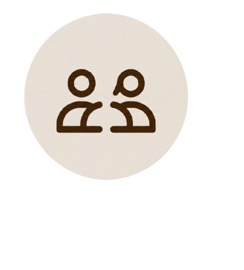
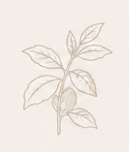

COFFEE QUALITY CHALLENGE
Campeonato de Avaliação Sensorial de Cafés Especiais
Avalie, compare e descubra os melhores cafés através dos seus sentidos.

Cafés Participantes
4
Avaliações Registradas
0

Sobre o Campeonato
Este campeonato tem como objetivo promover a qualidade dos nossos cafés através de avaliações sensoriais baseados nos critérios da metodologia SCA.